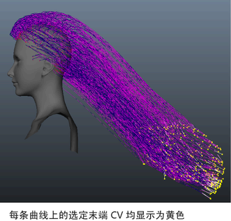

为 nHair 进行样式设计时，通常需要选择要为其应用 nConstraint 的一组曲线 CV。例如，要定位头发曲线，则可能需要为“变换”(Transform)约束选择每条曲线上的末端 CV。请注意，可供选择的组件取决于头发系统当前显示的内容。通过选择“nHair > 展示 > 当前位置”(nHair > Display > Current Position)将显示设定为曲线的当前位置。
请参见开始位置、静止位置和当前位置的曲线和 设定头发曲线位置。
选择头发曲线 CV 的步骤
头发曲线将显示在其当前位置。
选定曲线的末端 CV 被选中。
将选定的曲线 CV 指定给 nConstraint。
请参见创建 nHair 约束。